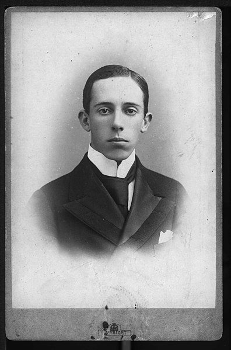
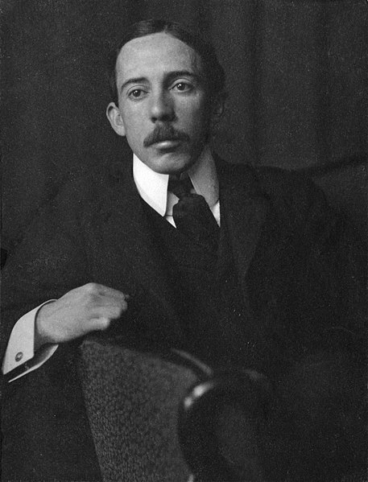
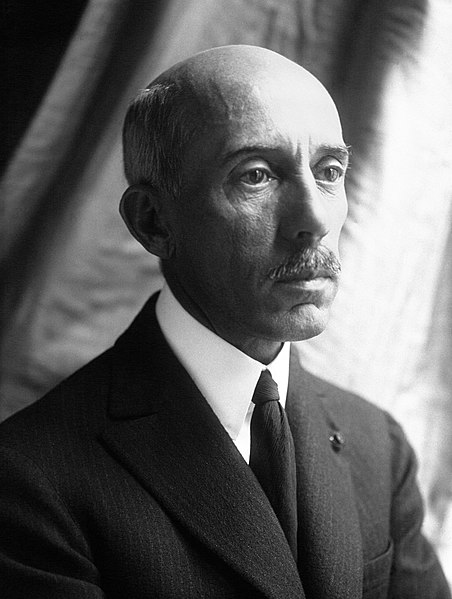
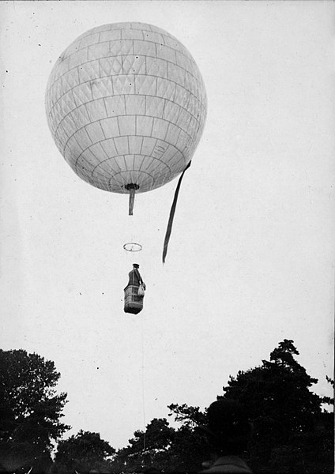
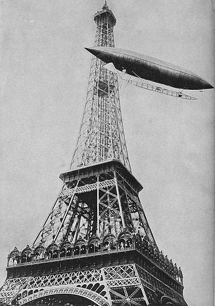
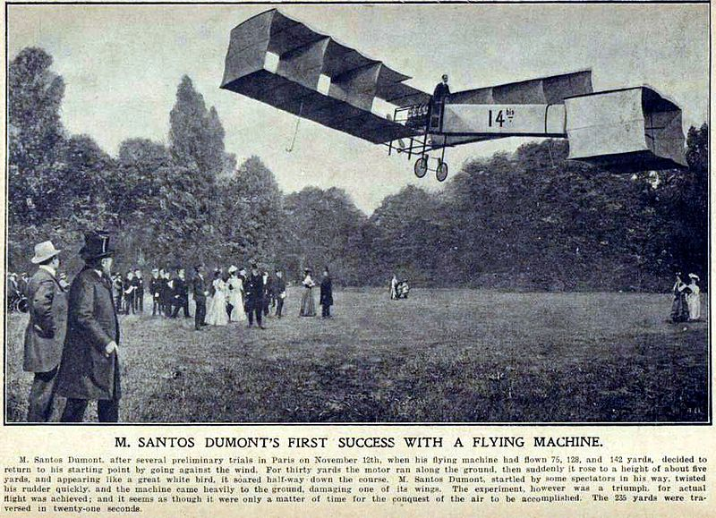
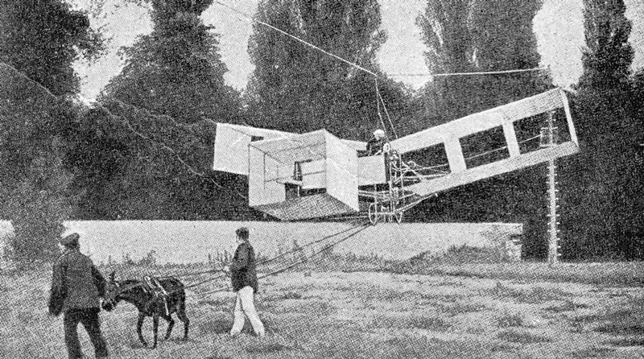

About
- 1873 - Born in Palmira (today named Santos Dumont), Minas Gerais
- 1891 - Santos Dumont's father was partially paralyzed by a fall from a horse. He sold the plantation and went to Europe with his wife and Santos Dumont in search of treatment. He returned to Brazil with his parents at the end of the year.
- 1892 - The family returned to Europe, but his father felt too ill to continue on to Paris from Lisbon, and Santos Dumont made the journey on his own. His father's health deteriorated and he decided to return to Brazil, where he died August 30. For the next four years Alberto lived in Paris, studying physics chemistry, mechanics, and electricity with the help of a private tutor, and returning to Brazil for short holidays.
- 1898 - Flew his first balloon design namely “Bresil”.
- 1898 to 1905 - Built and flew 11 "Dirigibles". At that time, air traffic control did not exist so he used to float along Paris boulevards at level in one of his airships.
- 1901 - Successfully made a trip by using his Dirigible “Number 6”.
- 1905 - Completed the design of his first fixed-wing aircraft and a helicopter. In the next year, he flew an aircraft by piloting the “14-bis”, a canard biplane at a height of about five meters or less. This event was the first flight that the Aero-Club de France verified. This trip won the Deutsch-Archdeacon Prize for the first officially observed flight further than 25 meters.
- 1910 - Suffered from double vision and vertigo that restricted him from driving and flying. He was also under treatment for suffering from multiple sclerosis.
- 1911 - Moved to the French seaside village of Bénerville (now Benerville-sur-Mer), where he took up astronomy as a hobby.
- 1914 - After the outbreak of war, his German-made telescope and unusual accent led to accusations he was a German spy tracking French naval activity, and his rooms searched by French police. Upset by the allegation and depressed about his illness Santos-Dumont burned all his papers and plans. He spent much of the 1920s in Swiss and French sanatoria, though returning to Brazil at times.
- 1931 - Santos Dumont's nephew went to Switzerland and brought him to Brazil.
- 1932 - Seriously ill and said to be depressed over his multiple sclerosis and the use of aircraft in warfare during São Paulo's Constitutionalist Revolution, he hanged himself on July 23 in the city of Guarujá (although his death certificate gives the cause of death as "cardiac collapse").